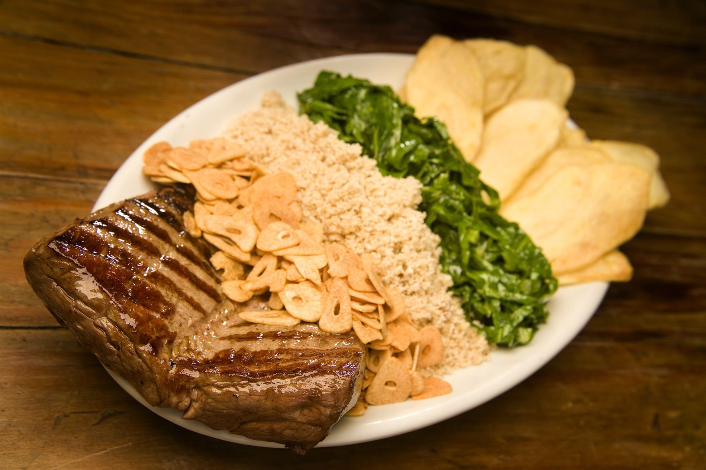
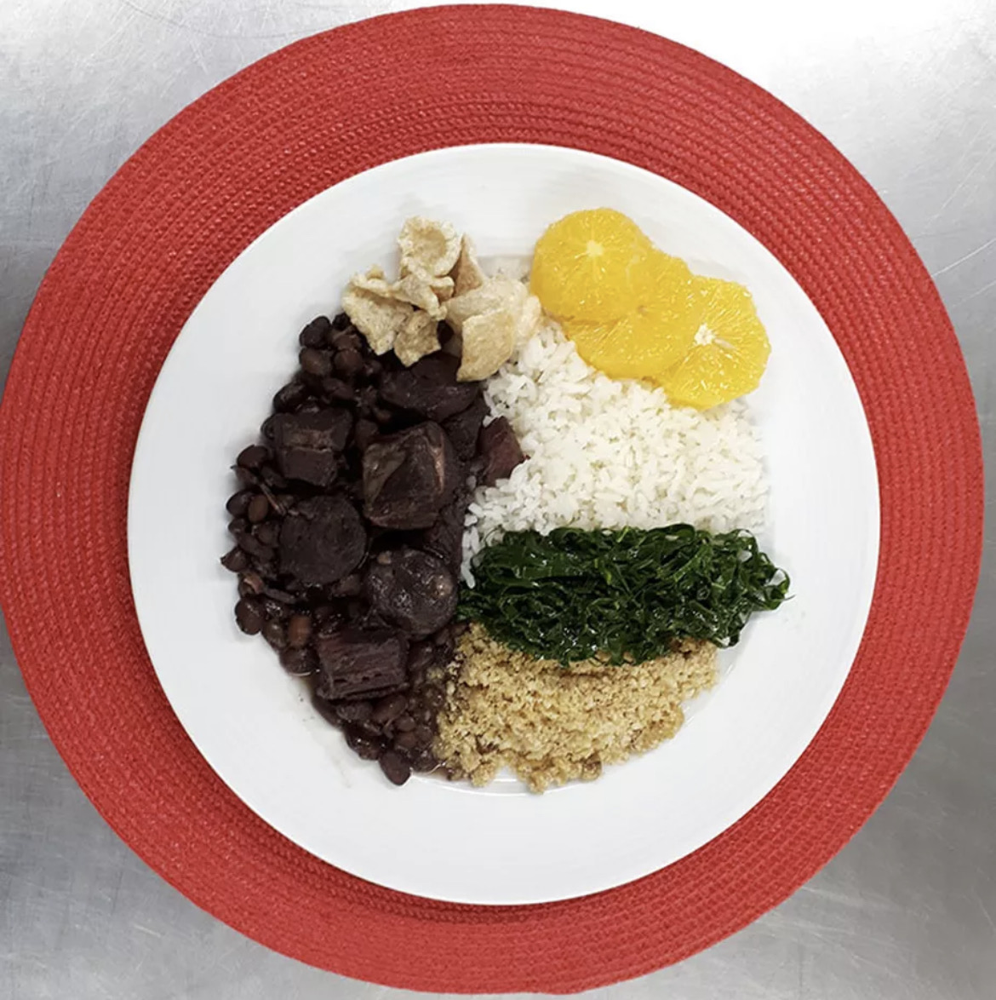

Rio de Janeiro
Comidas Típicas
Filé a Oswaldo Aranha - Comida típica do Rio de Janeiro,teve esse nome como forma de homenagear Oswaldo Euclides de Sousa Aranha, uma figura política da época de Getúlio. Consiste em um filé mignon alto ou um contra filé, temperado com alho frito, acompanhado de batatas portuguesas, arroz branco e farofa de ovos.
Feijoada Carioca - A feijoada já é um prato muito comum em diversos locais do Brasil, mas no Rio de Janeiro é quase que uma lei. Composta por feijão muito bem temperado, farofa, couve e molho vinagrete. Composta pelos mais diversos acompanhamentos, como batata ou mandioca, além de carne de porco.
Biscoito Globo - O que pode parecer apenas um simples biscoito de polvilho, conta uma grande história. Esse biscoito foi criado por três irmãos que trabalhavam em uma padaria que foi homenageada no nome do petisco mais famoso das cidades fluminenses. Tendo sido criado em 1954, esse biscoito só é vendido no Rio de Janeiro, sendo parte importante da cultura.

Músicas do Rio de Janeiro
Garota de Ipanema - Tom Jobim
O maior clássico da música brasileira conta sobre uma bela mulher que frequentava a praia de Ipanema, no Rio de Janeiro. Esse música é um marco histórico não só para os cariocas, como também para todos os brasileiros, que podem ouvir essa música cantada nos mais diversos idiomas em qualquer lugar do mundo.
Do Leme ao Pontal - Tim Maia
Nessa música, Tim Maia exalta a beleza do Rio de Janeiro, se referindo à Praia do Leme, onde morava, na Zona Sul, e também se referindo à Praia do Pontal, que se localiza na Zona Oeste do Rio. Podemos perceber o quanto essa cidade é bela para o cantor, que elogia a cidade de uma ponta a outra.
Cariocas - Adriana Calcanhotto
Com essa obra, podemos ver diversos gostos e características das pessoas nascidas na cidade do Rio de Janeiro. Na letra, podemos ver de tudo, desde a exaltação da beleza até o amor que os cariocas sentem pelo futebol, junto com sua habilidade no esporte.